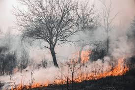
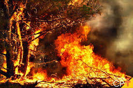
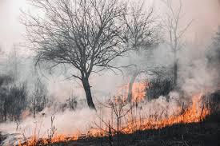
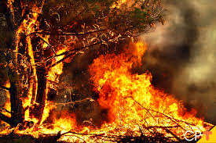
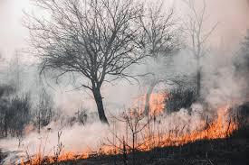
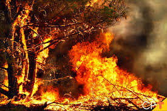

O que são queimadas?
Queimadas são incêndios provocados ou naturais que ocorrem em florestas, matas e outros biomas, resultando na destruição da vegetação e danos ao meio ambiente.
Impacto das Queimadas
 




